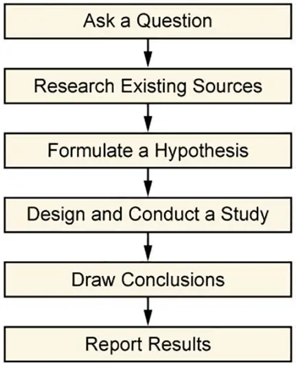
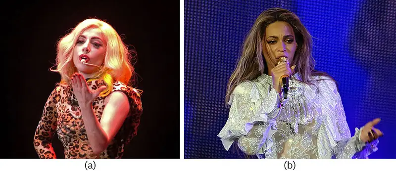
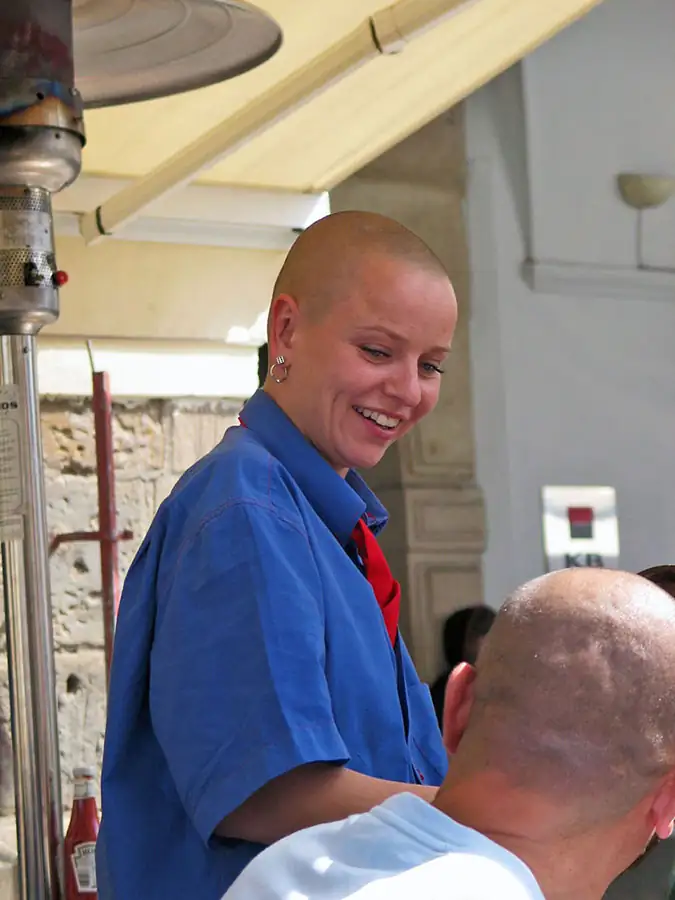
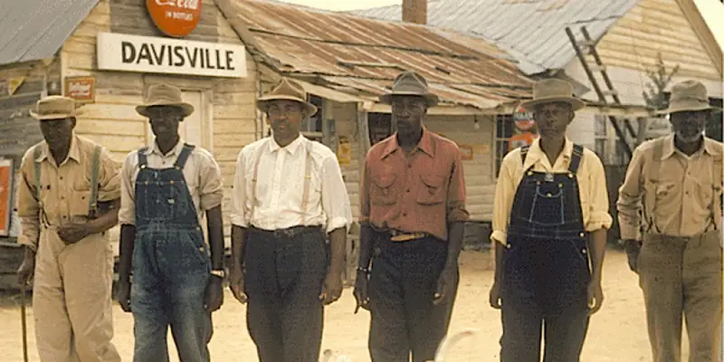

Chapter 2: Sociological Research¶
Introduction¶
As sociology made its way into American universities, scholars developed it into a science that relies on research to build a body of knowledge. Sociologists began collecting data (observations and documentation) and applying the scientific method or an interpretative framework to increase understanding of societies and social interactions.
Our observations about social situations often incorporate biases based on our own views and limited data. To avoid subjectivity, sociologists conduct experiments or studies that gather and analyze empirical evidence from direct experience. Peers review the conclusions from this research and often repeat the experiments or studies or apply them to other contexts in order to validate these conclusions. Examples of peer-reviewed research are found in scholarly journals.
Consider a study on the relationship between COVID-19 and crime rates published in Crime Science, a scholarly journal. Researchers hypothesized that COVID-19 stay-at-home restrictions would lead to a drop both in street crimes and home burglaries. Researchers collected the data Swedish police used to track and project future crimes. They found that assaults, pickpocketing and burglary had decreased significantly (Gerell, Kardell, and Kindgren, 2020). In this way, researchers used empirical evidence and statistical analysis to answer the question how did COVID-19 restrictions impact crime rates. In this chapter, we will explore the approaches and methods sociologists use to conduct studies like this one.
2.1 Approaches to Sociological Research¶
Learning Objectives
By the end of this section, you should be able to:
- Define and describe the scientific method.
- Explain how the scientific method is used in sociological research.
- Describe the function and importance of an interpretive framework.
- Describe the differences in accuracy, reliability and validity in a research study.
When sociologists apply the sociological perspective and begin to ask questions, no topic is off limits. Every aspect of human behavior is a source of possible investigation. Sociologists question the world that humans have created and live in. They notice patterns of behavior as people move through that world. Using sociological methods and systematic research within the framework of the scientific method and a scholarly interpretive perspective, sociologists have discovered social patterns in the workplace that have transformed industries, in families that have enlightened family members, and in education that have aided structural changes in classrooms.
Sociologists often begin the research process by asking a question about how or why things happen in this world. It might be a unique question about a new trend or an old question about a common aspect of life. Once the question is formed, the sociologist proceeds through an in-depth process to answer it. In deciding how to design that process, the researcher may adopt a scientific approach or an interpretive framework. The following sections describe these approaches to knowledge.
The Scientific Method¶
Sociologists make use of tried and true methods of research, such as experiments, surveys, and field research. But humans and their social interactions are so diverse that these interactions can seem impossible to chart or explain. It might seem that science is about discoveries and chemical reactions or about proving ideas right or wrong rather than about exploring the nuances of human behavior.
However, this is exactly why scientific models work for studying human behavior. A scientific process of research establishes parameters that help make sure results are objective and accurate. Scientific methods provide limitations and boundaries that focus a study and organize its results.
The scientific method involves developing and testing theories about the social world based on empirical evidence. It is defined by its commitment to systematic observation of the empirical world and strives to be objective, critical, skeptical, and logical. It involves a series of six prescribed steps that have been established over centuries of scientific scholarship.

Sociological research does not reduce knowledge to right or wrong facts. Results of studies tend to provide people with insights they did not have before—explanations of human behaviors and social practices and access to knowledge of other cultures, rituals and beliefs, or trends and attitudes.
In general, sociologists tackle questions about the role of social characteristics in outcomes or results. For example, how do different communities fare in terms of psychological well-being, community cohesiveness, range of vocation, wealth, crime rates, and so on? Are communities functioning smoothly? Sociologists often look between the cracks to discover obstacles to meeting basic human needs. They might also study environmental influences and patterns of behavior that lead to crime, substance abuse, divorce, poverty, unplanned pregnancies, or illness. And, because sociological studies are not all focused on negative behaviors or challenging situations, social researchers might study vacation trends, healthy eating habits, neighborhood organizations, higher education patterns, games, parks, and exercise habits.
Sociologists can use the scientific method not only to collect but also to interpret and analyze data. They deliberately apply scientific logic and objectivity. They are interested in—but not attached to—the results. They work outside of their own political or social agendas. This does not mean researchers do not have their own personalities, complete with preferences and opinions. But sociologists deliberately use the scientific method to maintain as much objectivity, focus, and consistency as possible in collecting and analyzing data in research studies.
With its systematic approach, the scientific method has proven useful in shaping sociological studies. The scientific method provides a systematic, organized series of steps that help ensure objectivity and consistency in exploring a social problem. They provide the means for accuracy, reliability, and validity. In the end, the scientific method provides a shared basis for discussion and analysis (Merton 1963). Typically, the scientific method has 6 steps which are described below.
Step 1: Ask a Question or Find a Research Topic¶
The first step of the scientific method is to ask a question, select a problem, and identify the specific area of interest. The topic should be narrow enough to study within a geographic location and time frame. “Are societies capable of sustained happiness?” would be too vague. The question should also be broad enough to have universal merit. “What do personal hygiene habits reveal about the values of students at XYZ High School?” would be too narrow. Sociologists strive to frame questions that examine well-defined patterns and relationships.
In a hygiene study, for instance, hygiene could be defined as “personal habits to maintain physical appearance (as opposed to health),” and a researcher might ask, “How do differing personal hygiene habits reflect the cultural value placed on appearance?”
Step 2: Review the Literature/Research Existing Sources¶
The next step researchers undertake is to conduct background research through a literature review, which is a review of any existing similar or related studies. A visit to the library, a thorough online search, and a survey of academic journals will uncover existing research about the topic of study. This step helps researchers gain a broad understanding of work previously conducted, identify gaps in understanding of the topic, and position their own research to build on prior knowledge. Researchers—including student researchers—are responsible for correctly citing existing sources they use in a study or that inform their work. While it is fine to borrow previously published material (as long as it enhances a unique viewpoint), it must be referenced properly and never plagiarized.
To study crime, a researcher might also sort through existing data from the court system, police database, prison information, interviews with criminals, guards, wardens, etc. It’s important to examine this information in addition to existing research to determine how these resources might be used to fill holes in existing knowledge. Reviewing existing sources educates researchers and helps refine and improve a research study design.
Step 3: Formulate a Hypothesis¶
A hypothesis is an explanation for a phenomenon based on a conjecture about the relationship between the phenomenon and one or more causal factors. In sociology, the hypothesis will often predict how one form of human behavior influences another. For example, a hypothesis might be in the form of an “if, then” statement. Let’s relate this to our topic of crime: If unemployment increases, then the crime rate will increase.
In scientific research, we formulate hypotheses to include an independent variable (IV), which is the cause of the change, and a dependent variable (DV), which is the effect, or thing that is changed. In the example above, unemployment is the independent variable and the crime rate is the dependent variable.
In a sociological study, the researcher would establish one form of human behavior as the independent variable and observe the influence it has on a dependent variable. How does gender (the independent variable) affect rate of income (the dependent variable)? How does one’s religion (the independent variable) affect family size (the dependent variable)? How is social class (the dependent variable) affected by level of education (the independent variable)?
Table 2.1 Examples of Dependent and Independent Variables Typically, the independent variable causes the dependent variable to change in some way.
| Hypothesis | Independent Variable | Dependent Variable |
|---|---|---|
| The greater the availability of affordable housing, the lower the homeless rate. | Affordable Housing | Homeless Rate |
| The greater the availability of math tutoring, the higher the math grades. | Math Tutoring | Math Grades |
| The greater the police patrol presence, the safer the neighborhood. | Police Patrol Presence | Safer Neighborhood |
| The greater the factory lighting, the higher the productivity. | Factory Lighting | Productivity |
| The greater the amount of media coverage, the higher the public awareness. | Observation | Public Awareness |
Taking an example from Table 12.1, a researcher might hypothesize that teaching children proper hygiene (the independent variable) will boost their sense of self-esteem (the dependent variable). Note, however, this hypothesis can also work the other way around. A sociologist might predict that increasing a child’s sense of self-esteem (the independent variable) will increase or improve habits of hygiene (now the dependent variable). Identifying the independent and dependent variables is very important. As the hygiene example shows, simply identifying related two topics or variables is not enough. Their prospective relationship must be part of the hypothesis.
Step 4: Design and Conduct a Study¶
Researchers design studies to maximize reliability, which refers to how likely research results are to be replicated if the study is reproduced. Reliability increases the likelihood that what happens to one person will happen to all people in a group or what will happen in one situation will happen in another. Cooking is a science. When you follow a recipe and measure ingredients with a cooking tool, such as a measuring cup, the same results is obtained as long as the cook follows the same recipe and uses the same type of tool. The measuring cup introduces accuracy into the process. If a person uses a less accurate tool, such as their hand, to measure ingredients rather than a cup, the same result may not be replicated. Accurate tools and methods increase reliability.
Researchers also strive for validity, which refers to how well the study measures what it was designed to measure. To produce reliable and valid results, sociologists develop an operational definition, that is, they define each concept, or variable, in terms of the physical or concrete steps it takes to objectively measure it. The operational definition identifies an observable condition of the concept. By operationalizing the concept, all researchers can collect data in a systematic or replicable manner. Moreover, researchers can determine whether the experiment or method validly represent the phenomenon they intended to study.
A study asking how tutoring improves grades, for instance, might define “tutoring” as “one-on-one assistance by an expert in the field, hired by an educational institution.” However, one researcher might define a “good” grade as a C or better, while another uses a B+ as a starting point for “good.” For the results to be replicated and gain acceptance within the broader scientific community, researchers would have to use a standard operational definition. These definitions set limits and establish cut-off points that ensure consistency and replicability in a study.
We will explore research methods in greater detail in the next section of this chapter.
Step 5: Draw Conclusions¶
After constructing the research design, sociologists collect, tabulate or categorize, and analyze data to formulate conclusions. If the analysis supports the hypothesis, researchers can discuss the implications of the results for the theory or policy solution that they were addressing. If the analysis does not support the hypothesis, researchers may consider repeating the experiment or think of ways to improve their procedure.
However, even when results contradict a sociologist’s prediction of a study’s outcome, these results still contribute to sociological understanding. Sociologists analyze general patterns in response to a study, but they are equally interested in exceptions to patterns. In a study of education, a researcher might predict that high school dropouts have a hard time finding rewarding careers. While many assume that the higher the education, the higher the salary and degree of career happiness, there are certainly exceptions. People with little education have had stunning careers, and people with advanced degrees have had trouble finding work. A sociologist prepares a hypothesis knowing that results may substantiate or contradict it.
Sociologists carefully keep in mind how operational definitions and research designs impact the results as they draw conclusions. Consider the concept of “increase of crime,” which might be defined as the percent increase in crime from last week to this week, as in the study of Swedish crime discussed above. Yet the data used to evaluate “increase of crime” might be limited by many factors: who commits the crime, where the crimes are committed, or what type of crime is committed. If the data is gathered for “crimes committed in Houston, Texas in zip code 77021,” then it may not be generalizable to crimes committed in rural areas outside of major cities like Houston. If data is collected about vandalism, it may not be generalizable to assault.
Step 6: Report Results¶
Researchers report their results at conferences and in academic journals. These results are then subjected to the scrutiny of other sociologists in the field. Before the conclusions of a study become widely accepted, the studies are often repeated in the same or different environments. In this way, sociological theories and knowledge develops as the relationships between social phenomenon are established in broader contexts and different circumstances.
Interpretive Framework¶
While many sociologists rely on empirical data and the scientific method as a research approach, others operate from an interpretive framework. While systematic, this approach doesn’t follow the hypothesis-testing model that seeks to find generalizable results. Instead, an interpretive framework, sometimes referred to as an interpretive perspective, seeks to understand social worlds from the point of view of participants, which leads to in-depth knowledge or understanding about the human experience.
Interpretive research is generally more descriptive or narrative in its findings. Rather than formulating a hypothesis and method for testing it, an interpretive researcher will develop approaches to explore the topic at hand that may involve a significant amount of direct observation or interaction with subjects including storytelling. This type of researcher learns through the process and sometimes adjusts the research methods or processes midway to optimize findings as they evolve.
Critical Sociology¶
Critical sociology focuses on deconstruction of existing sociological research and theory. Informed by the work of Karl Marx, scholars known collectively as the Frankfurt School proposed that social science, as much as any academic pursuit, is embedded in the system of power constituted by the set of class, caste, race, gender, and other relationships that exist in the society. Consequently, it cannot be treated as purely objective. Critical sociologists view theories, methods, and the conclusions as serving one of two purposes: they can either legitimate and rationalize systems of social power and oppression or liberate humans from inequality and restriction on human freedom. Deconstruction can involve data collection, but the analysis of this data is not empirical or positivist.
2.2 Research Methods¶
Learning Objectives
By the end of this section, you should be able to:
- Recall the 6 Steps of the Scientific Method
- Differentiate between four kinds of research methods: surveys, field research, experiments, and secondary data analysis.
- Explain the appropriateness of specific research approaches for specific topics.
Sociologists examine the social world, see a problem or interesting pattern, and set out to study it. They use research methods to design a study. Planning the research design is a key step in any sociological study. Sociologists generally choose from widely used methods of social investigation: primary source data collection such as survey, participant observation, ethnography, case study, unobtrusive observations, experiment, and secondary data analysis, or use of existing sources. Every research method comes with plusses and minuses, and the topic of study strongly influences which method or methods are put to use. When you are conducting research think about the best way to gather or obtain knowledge about your topic, think of yourself as an architect. An architect needs a blueprint to build a house, as a sociologist your blueprint is your research design including your data collection method.
When entering a particular social environment, a researcher must be careful. There are times to remain anonymous and times to be overt. There are times to conduct interviews and times to simply observe. Some participants need to be thoroughly informed; others should not know they are being observed. A researcher wouldn’t stroll into a crime-ridden neighborhood at midnight, calling out, “Any gang members around?”
Making sociologists’ presence invisible is not always realistic for other reasons. That option is not available to a researcher studying prison behaviors, early education, or the Ku Klux Klan. Researchers can’t just stroll into prisons, kindergarten classrooms, or Klan meetings and unobtrusively observe behaviors or attract attention. In situations like these, other methods are needed. Researchers choose methods that best suit their study topics, protect research participants or subjects, and that fit with their overall approaches to research.
Surveys¶
As a research method, a survey collects data from subjects who respond to a series of questions about behaviors and opinions, often in the form of a questionnaire or an interview. The survey is one of the most widely used scientific research methods. The standard survey format allows individuals a level of anonymity in which they can express personal ideas.
At some point, most people in the United States respond to some type of survey. The 2020 U.S. Census is an excellent example of a large-scale survey intended to gather sociological data. Since 1790, the United States government has conducted a survey consisting of six questions designed to collect demographic data about residents. Currently, the Census is received by residents in the United Stated and five territories, and consists of 12 questions.
Not all surveys are considered sociological research, however, and many surveys people commonly encounter focus on identifying marketing needs and strategies rather than testing a hypothesis or contributing to social science knowledge. Questions such as, “How many hot dogs do you eat in a month?” or “Were the staff helpful?” are not usually designed as scientific research. The Nielsen Ratings determine the popularity of television programming through scientific market research. However, polls conducted by television programs such as American Idol or So You Think You Can Dance cannot be generalized, because they are administered to an unrepresentative population, a specific show’s audience. You might receive polls through your cell phones or emails, from grocery stores, restaurants, and retail stores. They often provide you incentives for completing the survey.
Sociologists conduct surveys under controlled conditions for specific purposes. Surveys gather different types of information from people. While surveys are not great at capturing the ways people really behave in social situations, they are a great method for discovering how people feel, think, and act—or at least how they say they feel, think, and act. Surveys can track preferences for presidential candidates or reported individual behaviors (such as sleeping, driving, or texting habits) or information such as employment status, income, and education levels.
A survey targets a specific population, people who are the focus of a study, such as college athletes, international students, or teenagers living with type 1 (juvenile-onset) diabetes. Most researchers choose to survey a small sector of the population, or a sample, a manageable number of subjects who represent a larger population. The success of a study depends on how well a population is represented by the sample. In a random sample, every person in a population has the same chance of being chosen for the study. As a result, a Gallup Poll, if conducted as a nationwide random sampling, should be able to provide an accurate estimate of public opinion whether it contacts 2,000 or 10,000 people.
After selecting subjects, the researcher develops a specific plan to ask questions and record responses. It is important to inform subjects of the nature and purpose of the survey up front. If they agree to participate, researchers thank subjects and offer them a chance to see the results of the study if they are interested. The researcher presents the subjects with an instrument, which is a means of gathering the information.
A common instrument is a questionnaire. Subjects often answer a series of closed-ended questions. The researcher might ask yes-or-no or multiple-choice questions, allowing subjects to choose possible responses to each question. This kind of questionnaire collects quantitative data—data in numerical form that can be counted and statistically analyzed. Just count up the number of “yes” and “no” responses or correct answers, and chart them into percentages.
Questionnaires can also ask more complex questions with more complex answers—beyond “yes,” “no,” or checkbox options. These types of inquiries use open-ended questions that require short essay responses. Participants willing to take the time to write those answers might convey personal religious beliefs, political views, goals, or morals. The answers are subjective and vary from person to person. How do you plan to use your college education?
Some topics that investigate internal thought processes are impossible to observe directly and are difficult to discuss honestly in a public forum. People are more likely to share honest answers if they can respond to questions anonymously. This type of personal explanation is qualitative data—conveyed through words. Qualitative information is harder to organize and tabulate. The researcher will end up with a wide range of responses, some of which may be surprising. The benefit of written opinions, though, is the wealth of in-depth material that they provide.
An interview is a one-on-one conversation between the researcher and the subject, and it is a way of conducting surveys on a topic. However, participants are free to respond as they wish, without being limited by predetermined choices. In the back-and-forth conversation of an interview, a researcher can ask for clarification, spend more time on a subtopic, or ask additional questions. In an interview, a subject will ideally feel free to open up and answer questions that are often complex. There are no right or wrong answers. The subject might not even know how to answer the questions honestly.
Questions such as “How does society’s view of alcohol consumption influence your decision whether or not to take your first sip of alcohol?” or “Did you feel that the divorce of your parents would put a social stigma on your family?” involve so many factors that the answers are difficult to categorize. A researcher needs to avoid steering or prompting the subject to respond in a specific way; otherwise, the results will prove to be unreliable. The researcher will also benefit from gaining a subject’s trust, from empathizing or commiserating with a subject, and from listening without judgment.
Surveys often collect both quantitative and qualitative data. For example, a researcher interviewing people who are incarcerated might receive quantitative data, such as demographics – race, age, sex, that can be analyzed statistically. For example, the researcher might discover that 20 percent of incarcerated people are above the age of 50. The researcher might also collect qualitative data, such as why people take advantage of educational opportunities during their sentence and other explanatory information.
The survey can be carried out online, over the phone, by mail, or face-to-face. When researchers collect data outside a laboratory, library, or workplace setting, they are conducting field research, which is our next topic.
Field Research¶
The work of sociology rarely happens in limited, confined spaces. Rather, sociologists go out into the world. They meet subjects where they live, work, and play. Field research refers to gathering primary data from a natural environment. To conduct field research, the sociologist must be willing to step into new environments and observe, participate, or experience those worlds. In field work, the sociologists, rather than the subjects, are the ones out of their element.
The researcher interacts with or observes people and gathers data along the way. The key point in field research is that it takes place in the subject’s natural environment, whether it’s a coffee shop or tribal village, a homeless shelter or the DMV, a hospital, airport, mall, or beach resort.
While field research often begins in a specific setting, the study’s purpose is to observe specific behaviors in that setting. Field work is optimal for observing how people think and behave. It seeks to understand why they behave that way. However, researchers may struggle to narrow down cause and effect when there are so many variables floating around in a natural environment. And while field research looks for correlation, its small sample size does not allow for establishing a causal relationship between two variables. Indeed, much of the data gathered in sociology do not identify a cause and effect but a correlation.
Sociology in the Real World: Beyoncé and Lady Gaga as Sociological Subjects

Sociologists have studied Lady Gaga and Beyoncé and their impact on music, movies, social media, fan participation, and social equality. In their studies, researchers have used several research methods including secondary analysis, participant observation, and surveys from concert participants.
In their study, Click, Lee & Holiday (2013) interviewed 45 Lady Gaga fans who utilized social media to communicate with the artist. These fans viewed Lady Gaga as a mirror of themselves and a source of inspiration. Like her, they embrace not being a part of mainstream culture. Many of Lady Gaga’s fans are members of the LGBTQ community. They see the “song “Born This Way” as a rallying cry and answer her calls for “Paws Up” with a physical expression of solidarity—outstretched arms and fingers bent and curled to resemble monster claws.”
Sascha Buchanan (2019) made use of participant observation to study the relationship between two fan groups, that of Beyoncé and that of Rihanna. She observed award shows sponsored by iHeartRadio, MTV EMA, and BET that pit one group against another as they competed for Best Fan Army, Biggest Fans, and FANdemonium. Buchanan argues that the media thus sustains a myth of rivalry between the two most commercially successful Black women vocal artists.
Participant Observation¶
In 2000, a comic writer named Rodney Rothman wanted an insider’s view of white-collar work. He slipped into the sterile, high-rise offices of a New York “dot com” agency. Every day for two weeks, he pretended to work there. His main purpose was simply to see whether anyone would notice him or challenge his presence. No one did. The receptionist greeted him. The employees smiled and said good morning. Rothman was accepted as part of the team. He even went so far as to claim a desk, inform the receptionist of his whereabouts, and attend a meeting. He published an article about his experience in The New Yorker called “My Fake Job” (2000). Later, he was discredited for allegedly fabricating some details of the story and The New Yorker issued an apology. However, Rothman’s entertaining article still offered fascinating descriptions of the inside workings of a “dot com” company and exemplified the lengths to which a writer, or a sociologist, will go to uncover material.
Rothman had conducted a form of study called participant observation, in which researchers join people and participate in a group’s routine activities for the purpose of observing them within that context. This method lets researchers experience a specific aspect of social life. A researcher might go to great lengths to get a firsthand look into a trend, institution, or behavior. A researcher might work as a waitress in a diner, experience homelessness for several weeks, or ride along with police officers as they patrol their regular beat. Often, these researchers try to blend in seamlessly with the population they study, and they may not disclose their true identity or purpose if they feel it would compromise the results of their research.

At the beginning of a field study, researchers might have a question: “What really goes on in the kitchen of the most popular diner on campus?” or “What is it like to be homeless?” Participant observation is a useful method if the researcher wants to explore a certain environment from the inside.
Field researchers simply want to observe and learn. In such a setting, the researcher will be alert and open minded to whatever happens, recording all observations accurately. Soon, as patterns emerge, questions will become more specific, observations will lead to hypotheses, and hypotheses will guide the researcher in analyzing data and generating results.
In a study of small towns in the United States conducted by sociological researchers John S. Lynd and Helen Merrell Lynd, the team altered their purpose as they gathered data. They initially planned to focus their study on the role of religion in U.S. towns. As they gathered observations, they realized that the effect of industrialization and urbanization was the more relevant topic of this social group. The Lynds did not change their methods, but they revised the purpose of their study.
This shaped the structure of Middletown: A Study in Modern American Culture, their published results (Lynd & Lynd, 1929).
The Lynds were upfront about their mission. The townspeople of Muncie, Indiana, knew why the researchers were in their midst. But some sociologists prefer not to alert people to their presence. The main advantage of covert participant observation is that it allows the researcher access to authentic, natural behaviors of a group’s members. The challenge, however, is gaining access to a setting without disrupting the pattern of others’ behavior. Becoming an inside member of a group, organization, or subculture takes time and effort. Researchers must pretend to be something they are not. The process could involve role playing, making contacts, networking, or applying for a job.
Once inside a group, some researchers spend months or even years pretending to be one of the people they are observing. However, as observers, they cannot get too involved. They must keep their purpose in mind and apply the sociological perspective. That way, they illuminate social patterns that are often unrecognized. Because information gathered during participant observation is mostly qualitative, rather than quantitative, the end results are often descriptive or interpretive. The researcher might present findings in an article or book and describe what he or she witnessed and experienced.
This type of research is what journalist Barbara Ehrenreich conducted for her book Nickel and Dimed. One day over lunch with her editor, Ehrenreich mentioned an idea. How can people exist on minimum-wage work? How do low-income workers get by? she wondered. Someone should do a study. To her surprise, her editor responded, Why don’t you do it?
That’s how Ehrenreich found herself joining the ranks of the working class. For several months, she left her comfortable home and lived and worked among people who lacked, for the most part, higher education and marketable job skills. Undercover, she applied for and worked minimum wage jobs as a waitress, a cleaning woman, a nursing home aide, and a retail chain employee. During her participant observation, she used only her income from those jobs to pay for food, clothing, transportation, and shelter.
She discovered the obvious, that it’s almost impossible to get by on minimum wage work. She also experienced and observed attitudes many middle and upper-class people never think about. She witnessed firsthand the treatment of working class employees. She saw the extreme measures people take to make ends meet and to survive. She described fellow employees who held two or three jobs, worked seven days a week, lived in cars, could not pay to treat chronic health conditions, got randomly fired, submitted to drug tests, and moved in and out of homeless shelters. She brought aspects of that life to light, describing difficult working conditions and the poor treatment that low-wage workers suffer.
The book she wrote upon her return to her real life as a well-paid writer, has been widely read and used in many college classrooms.
Ethnography¶
Ethnography is the immersion of the researcher in the natural setting of an entire social community to observe and experience their everyday life and culture. The heart of an ethnographic study focuses on how subjects view their own social standing and how they understand themselves in relation to a social group.
An ethnographic study might observe, for example, a small U.S. fishing town, an Inuit community, a village in Thailand, a Buddhist monastery, a private boarding school, or an amusement park. These places all have borders. People live, work, study, or vacation within those borders. People are there for a certain reason and therefore behave in certain ways and respect certain cultural norms. An ethnographer would commit to spending a determined amount of time studying every aspect of the chosen place, taking in as much as possible.
A sociologist studying a tribe in the Amazon might watch the way villagers go about their daily lives and then write a paper about it. To observe a spiritual retreat center, an ethnographer might sign up for a retreat and attend as a guest for an extended stay, observe and record data, and collate the material into results.
Institutional Ethnography¶
Institutional ethnography is an extension of basic ethnographic research principles that focuses intentionally on everyday concrete social relationships. Developed by Canadian sociologist Dorothy E. Smith (1990), institutional ethnography is often considered a feminist-inspired approach to social analysis and primarily considers women’s experiences within male- dominated societies and power structures. Smith’s work is seen to challenge sociology’s exclusion of women, both academically and in the study of women’s lives (Fenstermaker, n.d.).
Historically, social science research tended to objectify women and ignore their experiences except as viewed from the male perspective. Modern feminists note that describing women, and other marginalized groups, as subordinates helps those in authority maintain their own dominant positions (Social Sciences and Humanities Research Council of Canada n.d.). Smith’s three major works explored what she called “the conceptual practices of power” and are still considered seminal works in feminist theory and ethnography (Fensternmaker n.d.).
Sociological Research: The Making of Middletown: A Study in Modern U.S. Culture
In 1924, a young married couple named Robert and Helen Lynd undertook an unprecedented ethnography: to apply sociological methods to the study of one U.S. city in order to discover what “ordinary” people in the United States did and believed. Choosing Muncie, Indiana (population about 30,000) as their subject, they moved to the small town and lived there for eighteen months.
Ethnographers had been examining other cultures for decades—groups considered minorities or outsiders—like gangs, immigrants, and the poor. But no one had studied the so-called average American.
Recording interviews and using surveys to gather data, the Lynds objectively described what they observed. Researching existing sources, they compared Muncie in 1890 to the Muncie they observed in 1924. Most Muncie adults, they found, had grown up on farms but now lived in homes inside the city. As a result, the Lynds focused their study on the impact of industrialization and urbanization.
They observed that Muncie was divided into business and working class groups. They defined business class as dealing with abstract concepts and symbols, while working class people used tools to create concrete objects. The two classes led different lives with different goals and hopes. However, the Lynds observed, mass production offered both classes the same amenities. Like wealthy families, the working class was now able to own radios, cars, washing machines, telephones, vacuum cleaners, and refrigerators. This was an emerging material reality of the 1920s.
As the Lynds worked, they divided their manuscript into six chapters: Getting a Living, Making a Home, Training the Young, Using Leisure, Engaging in Religious Practices, and Engaging in Community Activities.
When the study was completed, the Lynds encountered a big problem. The Rockefeller Foundation, which had commissioned the book, claimed it was useless and refused to publish it. The Lynds asked if they could seek a publisher themselves.
Middletown: A Study in Modern American Culture was not only published in 1929 but also became an instant bestseller, a status unheard of for a sociological study. The book sold out six printings in its first year of publication, and has never gone out of print (Caplow, Hicks, & Wattenberg. 2000).
Nothing like it had ever been done before. Middletown was reviewed on the front page of the New York Times. Readers in the 1920s and 1930s identified with the citizens of Muncie, Indiana, but they were equally fascinated by the sociological methods and the use of scientific data to define ordinary people in the United States. The book was proof that social data was important—and interesting—to the U.S. public.
Case Study¶
Sometimes a researcher wants to study one specific person or event. A case study is an in-depth analysis of a single event, situation, or individual. To conduct a case study, a researcher examines existing sources like documents and archival records, conducts interviews, engages in direct observation and even participant observation, if possible.
Researchers might use this method to study a single case of a foster child, drug lord, cancer patient, criminal, or rape victim. However, a major criticism of the case study as a method is that while offering depth on a topic, it does not provide enough evidence to form a generalized conclusion. In other words, it is difficult to make universal claims based on just one person, since one person does not verify a pattern. This is why most sociologists do not use case studies as a primary research method.
However, case studies are useful when the single case is unique. In these instances, a single case study can contribute tremendous insight. For example, a feral child, also called “wild child,” is one who grows up isolated from human beings. Feral children grow up without social contact and language, which are elements crucial to a “civilized” child’s development. These children mimic the behaviors and movements of animals, and often invent their own language. There are only about one hundred cases of “feral children” in the world.
As you may imagine, a feral child is a subject of great interest to researchers. Feral children provide unique information about child development because they have grown up outside of the parameters of “normal” growth and nurturing. And since there are very few feral children, the case study is the most appropriate method for researchers to use in studying the subject.
At age three, a Ukranian girl named Oxana Malaya suffered severe parental neglect. She lived in a shed with dogs, and she ate raw meat and scraps. Five years later, a neighbor called authorities and reported seeing a girl who ran on all fours, barking. Officials brought Oxana into society, where she was cared for and taught some human behaviors, but she never became fully socialized. She has been designated as unable to support herself and now lives in a mental institution (Grice 2011). Case studies like this offer a way for sociologists to collect data that may not be obtained by any other method.
Experiments¶
You have probably tested some of your own personal social theories. “If I study at night and review in the morning, I’ll improve my retention skills.” Or, “If I stop drinking soda, I’ll feel better.” Cause and effect. If this, then that. When you test the theory, your results either prove or disprove your hypothesis.
One way researchers test social theories is by conducting an experiment, meaning they investigate relationships to test a hypothesis—a scientific approach.
There are two main types of experiments: lab-based experiments and natural or field experiments. In a lab setting, the research can be controlled so that more data can be recorded in a limited amount of time. In a natural or field- based experiment, the time it takes to gather the data cannot be controlled but the information might be considered more accurate since it was collected without interference or intervention by the researcher.
As a research method, either type of sociological experiment is useful for testing if-then statements: if a particular thing happens (cause), then another particular thing will result (effect). To set up a lab-based experiment, sociologists create artificial situations that allow them to manipulate variables.
Classically, the sociologist selects a set of people with similar characteristics, such as age, class, race, or education. Those people are divided into two groups. One is the experimental group and the other is the control group. The experimental group is exposed to the independent variable(s) and the control group is not. To test the benefits of tutoring, for example, the sociologist might provide tutoring to the experimental group of students but not to the control group. Then both groups would be tested for differences in performance to see if tutoring had an effect on the experimental group of students. As you can imagine, in a case like this, the researcher would not want to jeopardize the accomplishments of either group of students, so the setting would be somewhat artificial. The test would not be for a grade reflected on their permanent record of a student, for example.
And if a researcher told the students they would be observed as part of a study on measuring the effectiveness of tutoring, the students might not behave naturally. This is called the Hawthorne effect—which occurs when people change their behavior because they know they are being watched as part of a study. The Hawthorne effect is unavoidable in some research studies because sociologists have to make the purpose of the study known. Subjects must be aware that they are being observed, and a certain amount of artificiality may result (Sonnenfeld 1985).
Sociological Research
A real-life example will help illustrate the process. In 1971, Frances Heussenstamm, a sociology professor at California State University at Los Angeles, had a theory about police prejudice. To test her theory, she conducted research. She chose fifteen students from three ethnic backgrounds: Black, White, and Hispanic. She chose students who routinely drove to and from campus along Los Angeles freeway routes, and who had had perfect driving records for longer than a year.
Next, she placed a Black Panther bumper sticker on each car. That sticker, a representation of a social value, was the independent variable. In the 1970s, the Black Panthers were a revolutionary group actively fighting racism. Heussenstamm asked the students to follow their normal driving patterns. She wanted to see whether seeming support for the Black Panthers would change how these good drivers were treated by the police patrolling the highways. The dependent variable would be the number of traffic stops/citations.
The first arrest, for an incorrect lane change, was made two hours after the experiment began. One participant was pulled over three times in three days. He quit the study. After seventeen days, the fifteen drivers had collected a total of thirty-three traffic citations. The research was halted. The funding to pay traffic fines had run out, and so had the enthusiasm of the participants (Heussenstamm, 1971).
Secondary Data Analysis¶
While sociologists often engage in original research studies, they also contribute knowledge to the discipline through secondary data analysis. Secondary data does not result from firsthand research collected from primary sources, but are the already completed work of other researchers or data collected by an agency or organization. Sociologists might study works written by historians, economists, teachers, or early sociologists. They might search through periodicals, newspapers, or magazines, or organizational data from any period in history.
Using available information not only saves time and money but can also add depth to a study. Sociologists often interpret findings in a new way, a way that was not part of an author’s original purpose or intention. To study how women were encouraged to act and behave in the 1960s, for example, a researcher might watch movies, televisions shows, and situation comedies from that period. Or to research changes in behavior and attitudes due to the emergence of television in the late 1950s and early 1960s, a sociologist would rely on new interpretations of secondary data. Decades from now, researchers will most likely conduct similar studies on the advent of mobile phones, the Internet, or social media.
Social scientists also learn by analyzing the research of a variety of agencies. Governmental departments and global groups, like the U.S. Bureau of Labor Statistics or the World Health Organization (WHO), publish studies with findings that are useful to sociologists. A public statistic like the foreclosure rate might be useful for studying the effects of a recession. A racial demographic profile might be compared with data on education funding to examine the resources accessible by different groups.
One of the advantages of secondary data like old movies or WHO statistics is that it is nonreactive research (or unobtrusive research), meaning that it does not involve direct contact with subjects and will not alter or influence people’s behaviors. Unlike studies requiring direct contact with people, using previously published data does not require entering a population and the investment and risks inherent in that research process.
Using available data does have its challenges. Public records are not always easy to access. A researcher will need to do some legwork to track them down and gain access to records. To guide the search through a vast library of materials and avoid wasting time reading unrelated sources, sociologists employ content analysis, applying a systematic approach to record and value information gleaned from secondary data as they relate to the study at hand.
Also, in some cases, there is no way to verify the accuracy of existing data. It is easy to count how many drunk drivers, for example, are pulled over by the police. But how many are not? While it’s possible to discover the percentage of teenage students who drop out of high school, it might be more challenging to determine the number who return to school or get their GED later.
Another problem arises when data are unavailable in the exact form needed or do not survey the topic from the precise angle the researcher seeks. For example, the average salaries paid to professors at a public school is public record. But these figures do not necessarily reveal how long it took each professor to reach the salary range, what their educational backgrounds are, or how long they’ve been teaching.
When conducting content analysis, it is important to consider the date of publication of an existing source and to take into account attitudes and common cultural ideals that may have influenced the research. For example, when Robert S. Lynd and Helen Merrell Lynd gathered research in the 1920s, attitudes and cultural norms were vastly different then than they are now. Beliefs about gender roles, race, education, and work have changed significantly since then. At the time, the study’s purpose was to reveal insights about small U.S. communities. Today, it is an illustration of 1920s attitudes and values.
2.3 Ethical Concerns¶
Learning Objectives
By the end of this section, you should be able to:
- Understand why ethical standards exist
- Investigate unethical studies
- Demonstrate awareness of the American Sociological Association’s Code of Ethics
Sociologists conduct studies to shed light on human behaviors. Knowledge is a powerful tool that can be used to achieve positive change. As a result, conducting a sociological study comes with a tremendous amount of responsibility. Like all researchers, sociologists must consider their ethical obligation to avoid harming human subjects or groups while conducting research.
Pioneer German sociologist Max Weber (1864–1920) identified another crucial ethical concern. Weber understood that personal values could distort the framework for disclosing study results. While he accepted that some aspects of research design might be influenced by personal values, he declared it was entirely inappropriate to allow personal values to shape the interpretation of the responses. Sociologists, he stated, must establish value neutrality, a practice of remaining impartial, without bias or judgment, during the course of a study and in publishing results (Weber, 1949). Sociologists are obligated to disclose research findings without omitting or distorting significant data.
Is value neutrality possible? Many sociologists believe it is impossible to retain complete objectivity. They caution readers, rather, to understand that sociological studies may contain a certain amount of value bias. This does not discredit the results, but allows readers to view them as one form of truth—one fact-based perspective. Some sociologists attempt to remain uncritical and as objective as possible when studying social institutions. They strive to overcome personal biases, particularly subconscious biases, when collecting and analyzing data. They avoid skewing data in order to match a predetermined outcome that aligns with a particular agenda, such as a political or moral point of view. Investigators are ethically obligated to report results, even when they contradict personal views, predicted outcomes, or widely accepted beliefs.
The American Sociological Association, or ASA, is the major professional organization of sociologists in North America. The ASA is a great resource for students of sociology as well. The ASA maintains a code of ethics—formal guidelines for conducting sociological research—consisting of principles and ethical standards to be used in the discipline. These formal guidelines were established by practitioners in 1905 at John Hopkins University, and revised in 1997. When working with human subjects, these codes of ethics require researchers to do the following:
- Maintain objectivity and integrity in research
- Respect subjects’ rights to privacy and dignity
- Protect subject from personal harm
- Preserve confidentiality
- Seek informed consent
- Acknowledge collaboration and assistance
- Disclose sources of financial support
Unfortunately, when these codes of ethics are ignored, it creates an unethical environment for humans being involved in a sociological study. Throughout history, there have been numerous unethical studies, some of which are summarized below.

The Tuskegee Experiment: This study was conducted 1932 in Macon County, Alabama, and included 600 African American men, including 399 diagnosed with syphilis. The participants were told they were diagnosed with a disease of “bad blood.” Penicillin was distributed in the 1940s as the cure for the disease, but unfortunately, the African American men were not given the treatment because the objective of the study was to see “how untreated syphilis would affect the African American male” (Caplan, 2007)
Henrietta Lacks: Ironically, this study was conducted at the hospital associated with Johns Hopkins University, where the ASA codes of ethics originated. In 1951, Henrietta Lacks was receiving treatment for cervical cancer at John Hopkins Hospital, and doctors discovered that she had “immortal” cells, which could reproduce rapidly and indefinitely, making them extremely valuable for medical research. Without her consent, doctors collected and shared her cells to produce extensive cell lines. Lacks’ cells were widely used for experiments and treatments, including the polio vaccine, and were put into mass production. Today, these cells are known worldwide as HeLa cells (Shah, 2010).
Milgram Experiment: In 1961, psychologist Stanley Milgram conducted an experiment at Yale University. Its purpose was to measure the willingness of study subjects to obey an authority figure who instructed them to perform acts that conflicted with their personal conscience. People in the role of teacher believed they were administering electric shocks to students who gave incorrect answers to word-pair questions. No matter how concerned they were about administering the progressively more intense shocks, the teachers were told to keep going. The ethical concerns involve the extreme emotional distress faced by the teachers, who believed they were hurting other people. (Vogel 2014).
Philip Zimbardo and the Stanford prison experiment: In 1971, psychologist Phillip Zimbardo conducted a study involving students from Stanford University. The students were put in the roles of prisoners and guards, and were required to play their assigned role accordingly. The experiment was intended to last two weeks, but it only lasted six days due to the negative outcome and treatment of the “prisoners.” Beyond the ethical concerns, the study’s validity has been questioned after participants revealed they had been coached to behave in specific ways.
Laud Humphreys: In the 1960s, Laud Humphreys conducted an experiment at a restroom in a park known for same-sex sexual encounters. His objective was to understand the diversity of backgrounds and motivations of people seeking same-sex relationships. His ethics were questioned because he misrepresented his identity and intent while observing and questioning the men he interviewed (Nardi, 1995).
Chapter Review¶
Key Terms¶
- accuracy
- using a tool makes the measuring more precise.
- case study
- in-depth analysis of a single event, situation, or individual
- code of ethics
- a set of guidelines that the American Sociological Association has established to foster ethical research and professionally responsible scholarship in sociology
- content analysis
- applying a systematic approach to record and value information gleaned from secondary data as it relates to the study at hand
- correlation
- when a change in one variable coincides with a change in another variable, but does not necessarily indicate causation
- debunking
- looking beyond the obvious to expose falseness by examining merit, logic, and evidence.
- dependent variables
- a variable changed by other variables
- empirical evidence
- evidence that comes from direct observations, scientifically gathered data, or experimentation
- ethnography
- participating and observing thinking and behavior in a social setting
- experiment
- the testing of a hypothesis under controlled conditions
- field research
- gathering data from a natural environment without doing a lab experiment or a survey
- Hawthorne effect
- when study subjects behave in a certain manner due to their awareness of being observed by a researcher
- hypothesis
- a testable educated guess about predicted outcomes between two or more variables
- independent variables
- variables that cause changes in dependent variables
- interpretive framework
- a sociological research approach that seeks in-depth understanding of a topic or subject through observation or interaction; this approach is not based on hypothesis testing
- interview
- a one-on-one conversation between the researcher and the subject
- literature review
- a scholarly research step that entails identifying and studying all existing studies on a topic to create a basis for new research
- nonreactive research
- using secondary data, does not include direct contact with research subjects and does not alter or influence people’s behaviors
- operational definitions
- specific explanations of abstract concepts that a researcher plans to study
- participant observation
- when a researcher immerses herself in a group or social setting in order to make observations from an “insider” perspective
- population
- a defined group serving as the subject of a study
- primary data
- data that are collected directly from firsthand experience
- qualitative data
- non-numerical, descriptive data that is often subjective and based on what is experienced in a natural setting
- quantitative data
- data collected in numerical form that can be counted and analyzed using statistics
- random sample
- a study’s participants being randomly selected to serve as a representation of a larger population
- reliability
- a measure of a study’s consistency that considers how likely results are to be replicated if a study is reproduced
- samples
- small, manageable number of subjects that represent the population
- scientific method
- an established scholarly research that involves asking a question, researching existing sources, forming a hypothesis, designing a data collection method, gathering data, and drawing conclusions
- secondary data analysis
- using data collected by others and applying new interpretations
- surveys
- collect data from subjects who respond to a series of questions about thinking, behaviors, and opinions, often in the form of a questionnaire
- validity
- the degree to which a sociological measure accurately reflects the topic of study
- value neutrality
- a practice of remaining impartial, without bias or judgment during the course of a study and in publishing results
Summary¶
2.1 Approaches to Sociological Research¶
Using the scientific method, a researcher conducts a study in six phases: asking a question, researching existing sources, formulating a hypothesis, research design, collecting & analyzing data, and drawing conclusions. The scientific method is useful in that it provides a clear method of organizing a study. Some sociologists conduct research through an interpretive framework rather than employing the scientific method.
Scientific sociological studies often observe relationships between variables. Researchers study how one variable influences another. Prior to conducting a study, researchers are careful to apply operational definitions to their terms and to establish dependent and independent variables.
2.2 Research Methods¶
Sociological research is a fairly complex process. As you can see, a lot goes into even a simple research design. There are many steps and much to consider when collecting data on human behavior, as well as in interpreting and analyzing data in order to form conclusive results. Sociologists use the scientific methods for good reasons. The scientific method provides a system of organization to help researchers plan and conduct a study to ensure data and results are reliable, valid, and objective.
The many methods available to researchers—including experiments, surveys, participant observation, ethnography, case study, and secondary data analysis—all come with advantages and disadvantages. The strength of a study can depend on the choice and implementation of the appropriate method of gathering data. Depending on the topic, a study might use a single method or a combination of methods. It is important to plan a research design before undertaking a study. The information gathered may in itself be surprising, and the study design should provide a solid framework in which to analyze predicted and unpredicted data.
Table 2.2 Main Sociological Research Methods Sociological research methods have advantages and disadvantages.
| Method | Implementation | Advantages | Challenges |
|---|---|---|---|
| Survey | • Questionnaires • Interviews |
• Yields many responses • Can survey a large sample • Quantitative data are easy to chart |
• Can be time consuming • Can be difficult to encourage participant response • Captures what people think and believe but not necessarily how they behave in real life |
| Field Work | • Participant observation • Ethnography • Case study |
• Yields detailed, accurate real-life information | • Time consuming • Data captures how people behave but not what they think and believe • Qualitative data is difficult to organize |
| Experiment | • Deliberate manipulation of social customs and mores | • Tests cause and effect relationships | • Hawthorne Effect • Ethical concerns about people’s wellbeing |
| Secondary Data Analysis | • Analysis of government data (census, health, crime statistics) • Research of historic documents |
• Makes good use of previous sociological information | • Data could be focused on a purpose other than yours • Data can be hard to find |
2.3 Ethical Concerns¶
Sociologists and sociology students must take ethical responsibility for any study they conduct. They must first and foremost guarantee the safety of their participants. Whenever possible, they must ensure that participants have been fully informed consent before participating in a study.
The American Sociological Association (ASA) establishes parameters for ethical guidelines that sociologists must take into account as they conduct research. The guidelines address conducting studies, properly using existing sources, accepting funding, and publishing results. Unfortunately, the code of ethics were not in existence and in some cases researchers did not adhere to ASA guidelines resulting in unethical practices in which humans were caused either physical or psychological harm.
Sociologists must try to maintain value neutrality. They must gather and analyze data objectively and set aside their personal preferences, beliefs, and opinions. They must report findings accurately, even if they contradict personal values and convictions.
References¶
References
Arkowitz, Hal, and Scott O. Lilienfeld. 2009. “Lunacy and the Full Moon: Does a full moon really trigger strange behavior?” Scientific American. Retrieved December 30, 2014 (http://www.scientificamerican.com/article/lunacy-and-the-full-moon/).
Bradbury Jones, C. and Isham, L. (2020), The pandemic paradox: The consequences of COVID 19 on domestic violence. J Clin Nurs, 29: 2047-2049. doi:10.1111/jocn.15296
Gerell, M., Kardell, J., & Kindgren, J. (2020, May 2). Minor covid-19 association with crime in Sweden, a ten week follow up. https://doi.org/10.31235/osf.io/w7gka
Rotton, James, and Ivan W. Kelly. 1985. “Much Ado about the Full Moon: A Meta-analysis of Lunar-Lunacy Research.”
Psychological Bulletin 97 (no. 2): 286–306.
2.1 Approaches to Sociological Research
Arkowitz, Hal, and Scott O. Lilienfeld. 2009. “Lunacy and the Full Moon: Does a full moon really trigger strange behavior?” Scientific American. Retrieved October 20, 2014 (http://www.scientificamerican.com/article/lunacy-and-the-full-moon/).
Berger, Peter L. 1963. Invitation to Sociology: A Humanistic Perspective. New York: Anchor Books.
Merton, Robert. 1968 [1949]. Social Theory and Social Structure. New York: Free Press.
“Scientific Method Lab,” the University of Utah, (http://aspire.cosmic-ray.org/labs/scientific_method/sci_method_main.html).
2.2 Research Methods
Butsch, Richard. 2000. The Making of American Audiences: From Stage to Television, 1750–1990. Cambridge: Cambridge UP.
Caplow, Theodore, Louis Hicks, and Ben Wattenberg. 2000. “The First Measured Century: Middletown.” The First Measured Century. PBS. Retrieved February 23, 2012 (http://www.pbs.org/fmc/index.htm).
Click, M., Lee, H., & Holladay, H. (2013). Making monsters: Lady Gaga, fan identification, and social media. Popular Music and Society, 36(3), 360–379. https://doi.org/10.1080/03007766.2013.798546
Dilling-Hansen, Lise. 2015. “Affective Fan Experiences of Lady Gaga.” Transformative Works and Cultures, no. 20. https://doi.org/10.3983/twc.2015.0662.
Durkheim, Émile. 1966 [1897]. Suicide. New York: Free Press.
Fenstermaker, Sarah. n.d. “Dorothy E. Smith Award Statement” American Sociological Association. Retrieved October 19, 2014 (http://www.asanet.org/about/awards/duboiscareer/smith.cfm).
Franke, Richard, and James Kaul. 1978. “The Hawthorne Experiments: First Statistical Interpretation.” American Sociological Review 43(5):632–643.
Grice, Elizabeth. “Cry of an Enfant Sauvage.” The Telegraph. Retrieved July 20, 2011 (http://www.telegraph.co.uk/culture/tvandradio/3653890/Cry-of-an-enfant-sauvage.html).
Griffin, F. J. (2011). At last . . . ? : Michelle obama, beyoncé, race & history. Daedalus, 140(1), 131-141,8. Retrieved from https://libproxy.uhcl.edu/login?url=https://search.proquest.com/docview/848998668?accountid=7108
Heussenstamm, Frances K. 1971. “Bumper Stickers and Cops” Trans-action: Social Science and Modern Society 4:32–33.
Igo, Sarah E. 2008. The Averaged American: Surveys, Citizens, and the Making of a Mass Public. Cambridge, MA: Harvard University Press.
Kumari, A. (2016), “Yoü and I”: Identity and the Performance of Self in Lady Gaga and Beyoncé. J Pop Cult, 49: 403-416. doi:10.1111/jpcu.12405
Jang, S. M., & Lee, H. (2014). When Pop Music Meets a Political Issue: Examining How “Born This Way” Influences Attitudes Toward Gays and Gay Rights Policies. Journal of Broadcasting & Electronic Media, 58(1), 114–130. https://doi-org.libproxy.uhcl.edu/10.1080/08838151.2013.875023
Lynd, Robert S., and Helen Merrell Lynd. 1959. Middletown: A Study in Modern American Culture. San Diego, CA: Harcourt Brace Javanovich.
Lynd, Staughton. 2005. “Making Middleton.” Indiana Magazine of History 101(3):226–238.
Pew Research Center. 2014. “Ebola Worries Rise, But Most Are ‘Fairly’ Confident in Government, Hospitals to Deal with Disease: Broad Support for U.S. Efforts to Deal with Ebola in West Africa.” Pew Research Center for the People & the Press, October 21. Retrieved October 25, 2014 (http://www.people-press.org/2014/10/21/ebola-worries-rise-but-most-are-fairly-confident-in-government-hospitals-to-deal-with-disease/).
Rothman, Rodney. 2000. “My Fake Job.” Pp. 120 in The New Yorker, November 27.
Social Sciences and Humanities Research Council of Canada. n.d. “Institutional Ethnography.” Retrieved October 19, 2014 (http://web.uvic.ca/~mariecam/kgSite/institutionalEthnography.html).
Sonnenfeld, Jeffery A. 1985. “Shedding Light on the Hawthorne Studies.” Journal of Occupational Behavior 6:125.
Sascha Buchanan. (2019). Competition and controlling images as the fuel igniting Beyoncé and Rihanna fandom fights. Transformative Works and Cultures, 29. https://doaj.org/article/557dc6f3b65a4e168f22a243eed914e2
Turbek, S.P., Chock, T.M., Donahue, K., Havrilla, C.A., Oliverio, A.M., Polutchko, S.K., Shoemaker, L.G. and Vimercati, L. (2016), Scientific Writing Made Easy: A Step by Step Guide to Undergraduate Writing in the Biological Sciences. Bull Ecol Soc Am, 97: 417-426. doi:10.1002/bes2.1258
2.3 Ethical Concerns
Caplain, Arthur (2007). Bad blood: The Tuskegee syphilis experiment. BioSocieties, 2(2). https://doi.org/10.1017/S1745855207225529
Code of Ethics. 1999. American Sociological Association. Retrieved July 1, 2011 (http://www.asanet.org/about/ethics.cfm).
Khan FA. The Immortal Life of Henrietta Lacks. J IMA. 2011;43(2):93-94. doi:10.5915/43-2-8609
Nardi, P. (1995). “The Breastplate of Righteousness”: Twenty-Five Years After Laud Humphreys’ Tearoom Trade; Impersonal Sex in Public Places. Journal of Homosexuality, 30(2), 1–10. http://search.proquest.com/docview/204986635/
Rossi, Peter H. 1987. “No Good Applied Social Research Goes Unpunished.” Society 25(1):73–79.
Shah, S. (2010). Henrietta Lacks’ story. The Lancet, 375(9721), 1154–1154. https://doi.org/10.1016/S0140-6736(10)60500-4
Valentine, Austin, “A Look Into the Tuskegee Study of Untreated Syphilis in the Negro Male in Macon County, Alabama“ (2019). Student Scholarship & Creative Works. 9. https://digitalcommons.murraystate.edu/sscw/9
Vogels, S. (2014). The Milgram experiment: Its impact and interpretation.
Weber, Max. 1949. Methodology of the Social Sciences. Translated by H. Shils and E. Finch. Glencoe, IL: Free Press.
Wikipedia contributors. (2020, June 28). Milgram experiment. In Wikipedia, The Free Encyclopedia. Retrieved 19:33, July 18, 2020, from https://en.wikipedia.org/w/index.php?title=Milgram_experiment&oldid=964989892
Wikipedia contributors. (2020, July 14). Laud Humphreys. In Wikipedia, The Free Encyclopedia. Retrieved 21:24, July 18, 2020, from https://en.wikipedia.org/w/index.php?title=Laud_Humphreys&oldid=967693266
Zimbardo, P., & Musen, K. (2004). Quiet Rage The Stanford Prison Experiment. Philip G. Zimbardo and Stanford University.
Section Quiz¶
2.1 Approaches to Sociological Research¶
1. The 1st step of the scientific method:
- Collect and analyze data
- Summarize the articles
- Ask a question about a topic
- Create a hypothesis
Answer
C
2. A measurement is considered ________ if it actually measures what it is intended to measure, according to the topic of the study.
- reliable
- sociological
- valid
- quantitative
Answer
C
3. Sociological studies test relationships in which change in one ________ causes change in another.
- test subject
- behavior
- variable
- operational definition
Answer
C
4. In a study, a group of ten-year-old boys are fed doughnuts every morning for a week and then weighed to see how much weight they gained. Which factor is the dependent variable?
- The doughnuts
- The boys
- The duration of a week
- The weight gained
Answer
D
5. Which statement provides the best operational definition of “childhood obesity”?
- Children who eat unhealthy foods and spend too much time watching television and playing video games
- A distressing trend that can lead to health issues including type 2 diabetes and heart disease
- Body weight at least 20 percent higher than a healthy weight for a child of that height
- The tendency of children today to weigh more than children of earlier generations
Answer
C
2.2 Research Methods¶
6. Which materials are considered secondary data?
- Photos and letters given to you by another person
- Books and articles written by other authors about their studies
- Information that you have gathered and now have included in your results
- Responses from participants whom you both surveyed and interviewed
Answer
B
7. Why is choosing a random sample an effective way to select participants?
- Participants do not know they are part of a study
- The researcher has no control over who is in the study
- It is larger than an ordinary sample
- Everyone has the same chance of being part of the study
Answer
D
8. What research method did John S. Lynd and Helen Merrell Lynd mainly use in their Middletown study?
- Secondary data
- Survey
- Participant observation
- Experiment
Answer
C
9. Which research approach is best suited to the scientific method?
- Questionnaire
- Case study
- Ethnography
- Secondary data analysis
Answer
A
10. The main difference between ethnography and other types of participant observation is:
- ethnography isn’t based on hypothesis testing
- ethnography subjects are unaware they’re being studied
- ethnographic studies always involve minority ethnic groups
- ethnography focuses on how subjects view themselves in relationship to the community
Answer
A
11. Which best describes the results of a case study?
- It produces more reliable results than other methods because of its depth
- Its results are not generally applicable
- It relies solely on secondary data analysis
- All of the above
Answer
B
12. Using secondary data is considered an unobtrusive or ________ research method.
- nonreactive
- nonparticipatory
- nonrestrictive
- nonconfrontive
Answer
A
2.3 Ethical Concerns¶
13. Which statement illustrates value neutrality?
- Obesity in children is obviously a result of parental neglect and, therefore, schools should take a greater role to prevent it
- In 2003, states like Arkansas adopted laws requiring elementary schools to remove soft drink vending machines from schools
- Merely restricting children’s access to junk food at school is not enough to prevent obesity
- Physical activity and healthy eating are a fundamental part of a child’s education
Answer
B
14. Which person or organization defined the concept of value neutrality?
- Institutional Review Board (IRB)
- Peter Rossi
- American Sociological Association (ASA)
- Max Weber
Answer
D
15. To study the effects of fast food on lifestyle, health, and culture, from which group would a researcher ethically be unable to accept funding?
- A fast-food restaurant
- A nonprofit health organization
- A private hospital
- A governmental agency like Health and Social Services
Answer
A
Short Answer¶
2.1 Approaches to Sociological Research¶
16. Write down the first three steps of the scientific method. Think of a broad topic that you are interested in and which would make a good sociological study—for example, ethnic diversity in a college, homecoming rituals, athletic scholarships, or teen driving. Now, take that topic through the first steps of the process. For each step, write a few sentences or a paragraph: 1) Develop a research question about the topic. 2) Do some research and write down the titles of some articles or books you’d want to read about the topic. 3) Formulate a hypothesis.
17. Explain the correlation between accuracy, validity, and reliability in the research method.
2.2 Research Methods¶
18. What type of data do surveys gather? For what topics would surveys be the best research method? What drawbacks might you expect to encounter when using a survey? To explore further, ask a research question and write a hypothesis. Then create a survey of about six questions relevant to the topic. Provide a rationale for each question. Now define your population and create a plan for recruiting a random sample and administering the survey.
19. Imagine you are about to do field research in a specific place for a set time. Instead of thinking about the topic of study itself, consider how you, as the researcher, will have to prepare for the study. What personal, social, and physical sacrifices will you have to make? How will you manage your personal effects? What organizational equipment and systems will you need to collect the data?
20. Create a brief research design about a topic in which you are passionately interested. Now write a letter to a philanthropic or grant organization requesting funding for your study. How can you describe the project in a convincing yet realistic and objective way? Explain how the results of your study will be a relevant contribution to the body of sociological work already in existence.
2.3 Ethical Concerns¶
21. Why do you think the American Sociological Association (ASA) crafted such a detailed set of ethical principles? What type of study could put human participants at risk? Think of some examples of studies that might be harmful. Do you think that, in the name of sociology, some researchers might be tempted to cross boundaries that threaten human rights? Why?
22. Would you willingly participate in a sociological study that could potentially put your health and safety at risk, but had the potential to help thousands or even hundreds of thousands of people? For example, would you participate in a study of a new drug that could cure diabetes or cancer, even if it meant great inconvenience and physical discomfort for you or possible permanent damage?
Further Research¶
2.1 Approaches to Sociological Research¶
For a historical perspective on the scientific method in sociology, read “The Elements of Scientific Method in Sociology” by F. Stuart Chapin (1914) in the American Journal of Sociology.
2.2 Research Methods¶
For information on current real-world sociology experiments, visit the Everday Sociology Blog.
2.3 Ethical Concerns¶
Founded in 1905, the American Sociological Association is a nonprofit organization located in Washington, DC, with a membership of 14,000 researchers, faculty members, students, and practitioners of sociology. Its mission is “to articulate policy and implement programs likely to have the broadest possible impact for sociology now and in the future.” Learn more about this organization here.
Adapted from Introduction to Sociology 3e by OpenStax, licensed under CC BY 4.0. Access the original for free at openstax.org. Changes: converted to the web reading format of The Open Book Project.